Joseph Hyrum and Leah Ellen Radford Lovell Family Group
Home
Histories
Charts
Photos
Maps
Restricted
News
Info
Contact
 symbol is a link to a history, and the chart
symbol is a link to a history, and the chart  symbol is a link to a family group chart.)
symbol is a link to a family group chart.)|
John Lovell and Ann PARSONS |
----> | 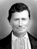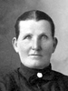 |
Joseph Hyrum Lovell Born 3 AUG 1844 Nauvoo,Hancock,IL Died 16 JUN 1892 Shelton,Bonn.,ID Leah Ellen Radford Born 6 APR 1853 Provo,Provo,UT Died 3 FEB 1923 Ririe,Jeff,ID Married 30 AUG 1869 Salt Lake City,S-LK,UT | |
| 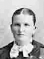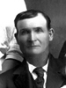 | Martha Ellen Lovell Born 30 JAN 1872 Oak City,Millard County,UT Died 21 JUN 1930 Bonneville County,ID Married William Erastus Dutson 8 MAY 1889 Manti L.D.S. Tem,,Sanpete County,UT The 1st child of Joseph Hyrum Lovell and Leah Ellen Radford |
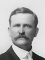1 2 2 |
John Franklin Lovell Born 7 SEP 1873 Oak City,Mllrd.,UT Died 21 MAR 1925 Idaho Falls,Bonneville,ID Married Eliza Ann Weaverling 23 NOV 1898 Logan,Cache,UT Married Jennie Spiers 10 June 1915 Salt lake City, Utah The 2nd child of Joseph Hyrum Lovell and Leah Ellen Radford |
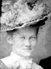 | Edmond Lovell Born 26 JUN 1875 Oak City,Millard,UT Died 12 NOV 1933 Idaho Falls,Bonneville,ID Married Jessie Leone Cole 9 OCT 1900 Salt Lake City,UT The 3th child of Joseph Hyrum Lovell and Leah Ellen Radford |
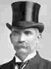 | Leah Ann Lovell Born 1 NOV 1877 Oak City,Millard,UT Died 22 AUG 1948 Idaho Falls,Bonneville Count,ID Married David Ririe 14 SEP 1893 Logan,Cache,Utah The 4th child of Joseph Hyrum Lovell and Leah Ellen Radford |
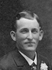 | James William Lovell Born 11 NOV 1879 Oak Creek,Millard,UT Died 31 MAY 1934 Rigby,Jefferson,ID Married Ida Harriet FREEMAN 7 NOV 1906 Logan,Cache,Utah The 5th child of Joseph Hyrum Lovell and Leah Ellen Radford |
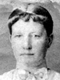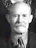 | Elizabeth Jane Lovell Born 13 MAR 1882 Oak City,Mllrd,UT Died 18 MAR 1947 Ririe,Jffrsn,ID Married Albert Tobias TIRRELL 18 SEP 1900 Salt Lake City,Salt Lake,UT The 6th child of Joseph Hyrum Lovell and Leah Ellen Radford |
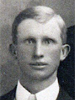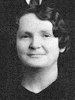 | George Hyrum Lovell Born 7 FEB 1884 Oak City,Millard County,UT Died 24 AUG 1941 Ririe,Jefferson County,ID Married Harriett Larkin BORROWMAN 7 JUN 1916 Salt Lake City,Salt Lake County,UT The 7th child of Joseph Hyrum Lovell and Leah Ellen Radford |
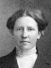 | Mary Josephine Lovell Born 6 JUL 1892 Shelton,Bingh.,ID Died 7 MAR 1957 Idaho Falls,Bonn.,ID Married Harold Heber FREEMAN The 8th child of Joseph Hyrum Lovell and Leah Ellen Radford |